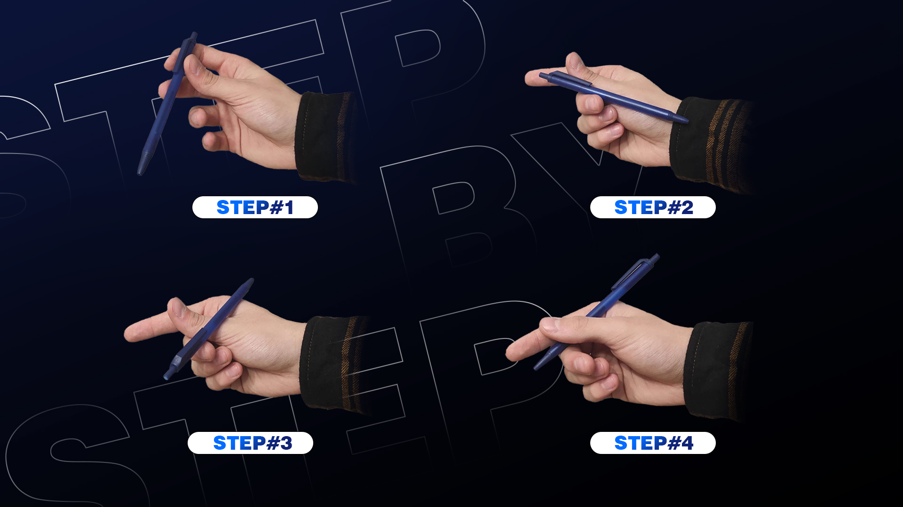

Learn to spin
All you need to learn pen spinning is patience and a random pen. When you're ready, click the button below...

All you need to learn pen spinning is patience and a random pen. When you're ready, click the button below...
In our tutorials, we explain how to do a given trick step by step, so that you can better understand how trick looks like and how to do it.
In our tutorials, we show tricks in slow motion, so you can take a better look on it, and easier understand the rotation of the pen and the movement of the hand.
Even if you won't understand how to do the trick from tutorial, you can watch it in 3D animation. You can see the animation in slow motion, and also rotate, zoom in and out the camera view.